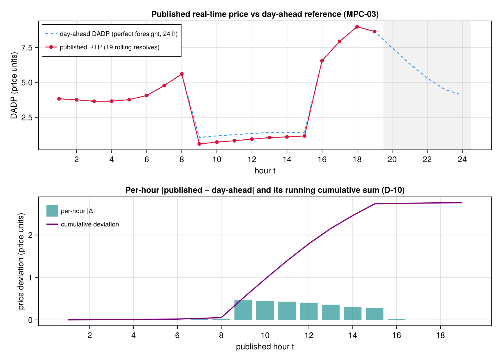

Rung 8 — MPC / Rolling-Horizon Real-Time Pricing
Every prior "Models" page in this manual solves ONE day-ahead problem and reports ONE set of duals. This page closes Phase 21 by demonstrating the alternative this framework now also supports: a receding-horizon closed loop — run_mpc re-solves a fixed-length window model every mpc_step hours, publishing a genuinely rolling real-time price (RTP) signal, and is honestly benchmarked against the perfect-foresight day-ahead optimum computed on the SAME realized truth. The terminal-equality mechanism this page exercises (D-06) follows the standard MPC textbook framing of a hard terminal-equality constraint (as opposed to a terminal COST/penalty) — Rawlings, Mayne & Diehl, Model Predictive Control: Theory, Computation, and Design is this project's own research citation for that framing (.planning/phases/21-mpc-rolling-horizon-real-time-pricing/21-RESEARCH.md, Assumptions Log A1) — flagged here explicitly as an unverified, training-knowledge citation: the edition and chapter were never checked against a live source this session, and a reader relying on the exact citation should confirm it independently rather than trust this page's mention of it. Every number shown below is RECOMPUTED live during this page's build, exactly like every prior rung page in this manual.
using TSODSOBuilding the 24-hour demonstration scenario
Unlike every prior rung page (restricted_branch_flow.jl, ac_oracle.jl), which inline a bespoke Bus/Branch/Feeder/Aggregator fixture by hand (literate pages never load test-only modules), run_mpc has exactly ONE entry point signature: run_mpc(s::Scenario) (D-01's "independent sibling orchestrator" — it is NOT wired through run_scenario's :centralized/:admm strategy dispatch, and never accepts a bare feeder/pf/aggregators tuple). Scenario's existing selector set — feeder = :ieee13, the project's ONLY :default population, the standard :mem price shape — already fully addresses this page's own 24-hour demonstration fixture, so this page constructs a Scenario rather than hand-building a second bespoke feeder: the declarative spec IS the "inlined fixture" for an entry point that only ever accepts one.
T = 24 is the full day-ahead horizon. mpc_H = 6 is a genuinely multi-hour receding window (documented choice: large enough to be demonstrative of a receding horizon, short enough that the closed loop re-solves many times over the day) — giving T - mpc_H + 1 = 19 published steps (Pitfall 5's fixed-window convention: the published-step COUNT is invariant to mpc_step, which stays at its default of 1). mpc_terminal_soc = true keeps D-06's hard terminal-SOC equality active (this page does NOT re-run the disabled/dump-hoard negative control — that A/B regression is test/test_mpc_terminal.jl's job, plan 21-04, not this rung's). mpc_forecast_error = 0.08 is a genuinely nonzero seeded bounded PV/demand perturbation, citing D-08's documented "±5-10%" range.
const T = 24
const H = 6
s = Scenario(;
name = "mpc-rolling-horizon-demo",
feeder = :ieee13,
T = T,
mpc_H = H,
mpc_terminal_soc = true,
mpc_forecast_error = 0.08,
)Scenario("mpc-rolling-horizon-demo", :ieee13, :centralized, 1, 24, :default, :mem, true, 100.0, 0.0001, 0.001, 200, 2.0, 10.0, 6, 1, true, 0.08, 3, [0.3333333333333333, 0.3333333333333333, 0.3333333333333333], 5)Running the full receding-horizon closed loop
run_mpc materializes the same heavy objects run_scenario does, solves TWO one-time perfect-foresight day-ahead benchmarks via solve_welfare (T = 24 hours each, both strictly outside the per-step loop): the FULL-population reference — including the :default population's Deferrable device — that produces day_ahead_welfare and the reference DADP path, and the COMPARABLE benchmark over the same Deferrable-excluded device set the closed loop controls, which the regret comparison reads (see section 3). It then builds the receding-horizon MpcWindow ONCE, and re-solves it 19 times (once per published hour, since mpc_step = 1 here), dispatching Phase-20's own non-throwing certificate/fallback ladder on every resolve and recording every published hour into an MpcTrace.
r = run_mpc(s)
r.steps19steps == T - mpc_H + 1 == 19, confirmed live above — the published-hour count this page's own <verify> invocation asserts.
1. Day-ahead SOC/price trajectory (perfect-foresight benchmark, all 24 hours)
The full-horizon reference DADP path the closed loop is benchmarked against — computed ONCE, never re-solved inside the per-step loop:
round.(r.day_ahead_dadp; digits = 4)24-element Vector{Float64}:
3.8284
3.7474
3.6483
3.6622
3.7617
4.0672
4.7844
5.5832
1.0599
1.1754
⋮
6.5386
7.9317
8.9682
8.6322
7.4776
6.3202
5.3123
4.4907
4.08282. The rolling published DADP path and its price-consistency metrics (MPC-03)
The genuinely PUBLISHED real-time price at each of the 19 rolling steps (elapsed hours are final — only the first interval of each resolved window is ever published):
round.(r.trace.dadp_trace; digits = 4)19-element Vector{Float64}:
3.827
3.7503
3.6515
3.6581
3.7639
4.0617
4.7683
5.6004
0.5977
0.73
0.8277
0.9415
1.0538
1.1023
1.1683
6.5512
7.927
8.9743
8.6362The day-ahead reference DADP at those SAME 19 absolute hours, recorded alongside for the cumulative-deviation computation:
round.(r.trace.dadp_da_trace; digits = 4)19-element Vector{Float64}:
3.8284
3.7474
3.6483
3.6622
3.7617
4.0672
4.7844
5.5832
1.0599
1.1754
1.2584
1.3457
1.4113
1.4076
1.4434
6.5386
7.9317
8.9682
8.6322Step-to-step price jump (max_jump/mean_jump, D-10's price-consistency norms) — the largest and average absolute price MOVE between two successive published hours:
max_jump(r.trace)5.382826074253717mean_jump(r.trace)0.8337747112956865The running cumulative deviation from the day-ahead path, at the FINAL published step (the sum of |published − day-ahead| across all 19 steps):
last(r.trace.cum_deviation_trace)2.760612452724878Figure — the rolling published price against the day-ahead path
The two price paths and the deviation ledger just displayed, drawn from the SAME already-computed r — nothing below re-runs the closed loop. TOP panel: the full 24-hour perfect-foresight day-ahead DADP reference (dashed) with the 19 genuinely PUBLISHED real-time prices overlaid at their absolute hours; the shaded tail marks the hours the fixed-window convention never publishes (T − mpc_H + 1 through T fall inside the final window but after its first interval — Pitfall 5). BOTTOM panel: the per-hour absolute published-vs-day-ahead gap |λ_RTP[t] − λ_DA[t]| (bars) under the RUNNING cumulative deviation (line) — the D-10 price-consistency ledger max_jump/mean_jump summarize as scalars above, shown here hour by hour. Both panels share the price unit; no twin axes. Same guarded-CairoMakie idiom as admm.jl/socp_applicability.jl; the block's final expression is the Figure Documenter renders inline.
if Base.find_package("CairoMakie") !== nothing
using CairoMakie
pub_hours = 1:r.steps
fig = Figure(size = (860, 620))
ax1 = Axis(
fig[1, 1];
xlabel = "hour t",
ylabel = "DADP (price units)",
xticks = 2:2:T,
title = "Published real-time price vs day-ahead reference (MPC-03)",
)
vspan!(ax1, r.steps + 0.5, T + 0.5; color = (:gray, 0.10))
lines!(
ax1,
1:T,
r.day_ahead_dadp;
color = :dodgerblue,
linestyle = :dash,
label = "day-ahead DADP (perfect foresight, 24 h)",
)
scatterlines!(
ax1,
pub_hours,
r.trace.dadp_trace;
color = :crimson,
label = "published RTP (19 rolling resolves)",
)
axislegend(ax1; position = :lt, labelsize = 11)
ax2 = Axis(
fig[2, 1];
xlabel = "published hour t",
ylabel = "price deviation (price units)",
xticks = 2:2:r.steps,
title = "Per-hour |published − day-ahead| and its running cumulative sum (D-10)",
)
barplot!(
ax2,
pub_hours,
abs.(r.trace.dadp_trace .- r.trace.dadp_da_trace);
color = (:teal, 0.6),
)
lines!(ax2, pub_hours, r.trace.cum_deviation_trace; color = :purple, linewidth = 2)
Legend(
fig[2, 1],
[PolyElement(color = (:teal, 0.6)), LineElement(color = :purple, linewidth = 2)],
["per-hour |Δ|", "cumulative deviation"];
tellwidth = false,
tellheight = false,
halign = :left,
valign = :top,
margin = (8, 8, 8, 8),
framevisible = false,
labelsize = 11,
)
fig
end
3. Regret — the measured, information-set-fair benchmark (MPC-04, D-11)
This is the honesty-load-bearing number on this page. regret is realized_welfare MINUS the day-ahead perfect-foresight welfare, but — per src/experiments/mpc_loop.jl's own documented contract, mirrored here verbatim rather than re-derived — RESTRICTED to the SAME PUBLISHED k-hour decision horizon (k = steps = 19, NEVER silently extended to the full T = 24 hours the day-ahead optimum itself spans) and read entirely from a SECOND, dedicated day-ahead benchmark solved over the SAME Deferrable-excluded device set the closed loop actually controls (the window model structurally cannot host a Deferrable device — its energy-budget window is baked against the full day-ahead horizon at construction time, src/experiments/mpc_loop.jl's own header deviation note). BOTH the comparison's per-device utilities AND its frontier p_import cost come from that comparable benchmark (review CR-03): an earlier revision of this comparison read p_import from the FULL-population day-ahead context, charging the day-ahead side the frontier cost of serving Deferrable's consumption while denying it Deferrable's utility — which systematically understated the benchmark and inflated the regret in the MPC's favor (that biased revision measured a small POSITIVE regret on this very fixture). The perfect-foresight day-ahead optimum is a genuine UPPER BOUND computed on the realized truth; this number is reported exactly as measured on THIS run, never tuned to look small (or large):
r.regret-0.03212527305004187For scale, the two raw welfare totals this regret is derived from (NOT directly comparable to each other on their own — day_ahead_welfare spans the full T = 24 hours and the FULL population including Deferrable; realized_welfare spans only the 19 published hours over the Deferrable-excluded device set; regret above is the correctly RESTRICTED comparison, not a subtraction of these two raw numbers):
r.day_ahead_welfare-4823.30470230212r.realized_welfare-3365.09046789990454. Per-step certificate/fallback status (D-04)
Every one of the 19 resolves ran Phase-20's own non-throwing certificate check — run_mpc NEVER throws mid-loop even on a genuinely inexact step, escalating instead through RestrictedBranchFlow/assert_restriction_exact!/ac_dual_fallback_price (the SAME ladder restricted_branch_flow.jl documents) and recording the outcome:
r.trace.cert_status_trace19-element Vector{Symbol}:
:certified_convex_dual
:certified_convex_dual
:certified_convex_dual
:certified_convex_dual
:certified_convex_dual
:certified_convex_dual
:certified_convex_dual
:certified_convex_dual
:certified_convex_dual
:certified_convex_dual
:certified_convex_dual
:certified_convex_dual
:certified_convex_dual
:certified_convex_dual
:certified_convex_dual
:certified_convex_dual
:certified_convex_dual
:certified_convex_dual
:certified_convex_dualany_cert_failed(r.trace)falseOn THIS particular 24-hour :ieee13 default-population fixture, every one of the 19 resolves certifies cleanly at the first (SOC-relaxation) tier — no escalation to the restricted or AC-fallback tiers was needed here. This is a plausible, honest outcome for a moderate fixture, not a claim that the escalation ladder is untested: test/test_mpc_loop.jl's forced-inexact @testitems (plan 21-05, extended by the phase's review fixes) drive Phase21Fixtures' high-PV fixture (pv_scale = MPC_HIGH_PV_SCALE_MEASURED = 3.0, a measured knife-edge value, cone ratio ≈ 9157× over threshold) directly through _mpc_certify_and_price — at t = 1 AND at t > 1 — and assert cert_status ∈ (:certified_convex_dual_restricted, :local_ac_dual) (a restricted-tier rescue carries its own provenance symbol, distinct from a first-tier certification), plus a dedicated item forcing BOTH tiers to fail and asserting the terminal :cert_failed status is published with the day-ahead reference fallback price rather than throwing. That is where the escalation ladder is genuinely exercised and proven never to throw, deliberately NOT fabricated as an artificial trigger on this page's own demonstration fixture.
Finding
The receding-horizon closed loop publishes a genuinely rolling real-time price signal — max_jump and mean_jump above describe the step-to-step price movement of THIS run's recomputed trace, not a frozen day-ahead path replayed hour by hour — while the measured regret quantifies exactly how far the closed loop's realized welfare falls short of the perfect-foresight day-ahead optimum over the SAME published decision horizon (as measured on this run: a small NEGATIVE regret, the closed loop giving up a little welfare to forecast error and the receding window — the direction theory expects from a genuine upper-bound benchmark; an earlier, biased revision of the comparison reported a small positive value, see the regret section above). Every certificate on this fixture cleared at the cheapest tier; the escalation ladder itself is proven never to throw on a genuinely forced-inexact fixture elsewhere in this phase's test suite (test/test_mpc_loop.jl), not on this page. The terminal-equality mechanism (D-06) that keeps the closed loop's battery trajectories information-set-fair against the day-ahead benchmark — rather than dumping or hoarding energy at the window's own artificial end — is validated, measured (a ~35,530× separation margin), and documented in test/test_mpc_terminal.jl (plan 21-04), not re-demonstrated on this page's own fixture.
This page was generated using Literate.jl.